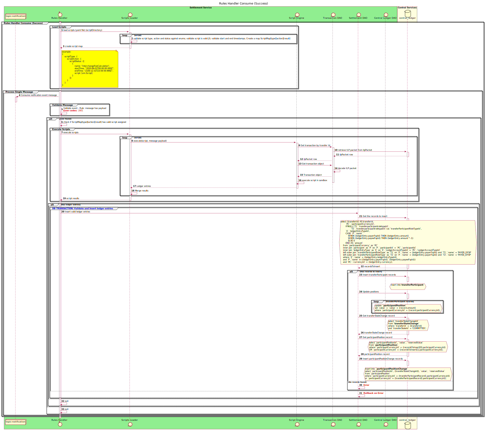

Rules Handler. Interchange fees example. File format.
Rules Handler
The Rules handler provides the capability to execute custom rule-based actions as a result of transfer processing events. Here we are giving example with Interchange fee calculation.
Sequence Diagram

Interchange fee case
In order to support the various options for accumulating interchange or other fees, we need to generate and settle liabilities incurred as a consequence of making transfers between particular types of customer. The general form of an example rule, that we are using to illustrate how it works is as follows:
- If the transaction is a wallet-to-wallet P2P transaction, then the receiver DFSP pays the sender DFSP 0.6% of the amount of the transaction.
- No interchange fees are levied for on-us transactions.
The business decisions around this requirement are:
- The definition of whether or not a payee account is a wallet is
returned by the payee DFSP as part of customer discovery. In the process, the
extensionof the transaction should should be extended with characterization of the account. - Interchange fees are captured by the switch when there is a matching trigger condition.
- Interchange fees have the ledger entry type INTERCHANGE_FEE and are recorded in accounts whose type is INTERCHANGE_FEE.
- Interchange fees are settled multilaterally, net and deferred. Make sure Settlement type and ledger account type for the INTERCHANGE FEE records are availabe
This functionality is implemented as a general process for defining and executing rules, and for taking actions based on the outcome of evaluation of a rule.
Evaluating a rule
The process of evaluating a rule is based on the following assumptions:
- There is a standard form of rule evaluation with the following
structure:
- A transaction object is passed as the parameter to the rule evaluation function.
- The rule evaluation itself uses a combination of simple and/or complex nested if statements
- If the rule evaluates to TRUE, then an action should be executeds
An example of a rule function to evaluate an interchange fee rule could be:
function evaluateInterchangeFee (transaction) {
if(
(transaction.payee.fspId.toLowerCase() != transaction.payer.fspId.toLowerCase())
&& (transaction.extensionList[“payerAccountType”].toLowerCase() ==
"Wallet".toLowerCase()
&& transaction.extensionList[“payeeAccountType”].toLowerCase() ==
"Wallet".toLowerCase())
&& (transaction.transactionType.scenario.toLowerCase() ==
"TRANSFER".toLowerCase()
&& transaction.transactionType.initiator.toLowerCase() == "PAYER".toLowerCase()
&& transaction.transactionType.initiatorType.toLowerCase() ==
"CONSUMER".toLowerCase())
)
// Do some good stuff
};
};
Taking action after evaluating a rule
If a rule evaluates to TRUE, then appropriate action is taken. In the case of the immediate example of interchange fees, the action taken should be to add two entries to the participants’ interchange fee accounts, on recording the debit from the payee of the interchange fee amount and the other recording the credit to the payer of the interchange fee amount.
There is defined class with methods that represent the actions to be taken. The rule evaluation instatiates the class and calls the appropriate functions.
In the case of the interchange fees, we have defined an action called addLedgerEntry, with the following parameters:
- The transfer ID for which the ledger entry is being created
- The ledger entry type to be used
- The currency in which the amount is denominated
- The amount of the fee
- The FSP ID of the credit party
- The FSP ID of the debit party
This might appear in the rule evaluation function as:
myAction.addLedgerEntry(transaction.transactionId,
"INTERCHANGE_FEE“,
"INTERCHANGE_FEE“,
transaction.currency,
transaction.amount\*0.006,
transaction.payer.fspId,
transaction.payee.fspId);
Providing rules
The files should be placed in a scripts directory, configured by the value of the environmental variable SETTINGS__SCRIPTS_FOLDER
Each rule file should be valid JS with the specified headers content. The required headers should be in the exact order and format as they are in the example below the table.
| Header | Description | Required |
|---|---|---|
| Name | Rule name | no |
| Type | Message event type. Corresponds to Kafka topic | yes |
| Action | Message event action. ex. Commit, Prepare, Log, etc | yes |
| Status | Status of the operation: success or failure | yes |
| Start | Time to start abiding the rule | yes |
| End | Until when the rule is valid | yes |
| Description | Rule description | no |
Based on the headers the rule is evaluated to be triggered or not.
In the below example rule script, a message on the notification topic with action commit and status success will trigger the code.
/* eslint-disable no-undef */
// ********************************************************
// Name: Interchange fee calculation
// Type: notification
// Action: commit
// Status: success
// Start: 2020-06-01T00:00:00.000Z
// End: 2100-12-31T23:59:59.999Z
// Description: This script calculates the interchange fees between DFSPs where the account type is "Wallet"
// ********************************************************
// ## Globals:
// payload: The contents of the message from the Kafka topic.
// transfer: The transfer object.
// # Functions:
// ## Data retrieval functions:
// getTransferFromCentralLedger(transferId): Retrieves a mojaloop transfer from the central-ledger API.
// ## Helper functions:
// getExtensionValue(list, key): Gets a value from an extension list
// log(message): allows the script to log to standard out for debugging purposes
// Math functions:
// multiply(number1, number2, decimalPlaces): Uses ml-number to handle multiplication of money values
// Ledger functions:
// addLedgerEntry: Adds a debit and credit ledger entry to the specified account to the specified DFSPs
log(JSON.stringify(transfer))
const payerFspId = transfer.payer.partyIdInfo.fspId
const payeeFspId = transfer.payee.partyIdInfo.fspId
if ((payeeFspId !== payerFspId) &&
(transfer.payee.partyIdInfo.extensionList && // WORKAROUND for issue #2149
transfer.payer.partyIdInfo.extensionList && // WORKAROUND for issue #2149
transfer.payee.partyIdInfo.extensionList.extension && // WORKAROUND for issue #2149
transfer.payer.partyIdInfo.extensionList.extension) && // WORKAROUND for issue #2149
(getExtensionValue(transfer.payee.partyIdInfo.extensionList.extension, 'accountType') === 'Wallet' &&
getExtensionValue(transfer.payer.partyIdInfo.extensionList.extension, 'accountType') === 'Wallet') &&
(transfer.transactionType.scenario === 'TRANSFER' &&
transfer.transactionType.initiator === 'PAYER' &&
transfer.transactionType.initiatorType === 'CONSUMER')) {
log(`Adding an interchange fee for Wallet to Wallet from ${payerFspId} to ${payeeFspId}`)
addLedgerEntry(payload.id, 'INTERCHANGE_FEE', // Ledger account type Id
'INTERCHANGE_FEE', // Ledger entry type Id
multiply(transfer.amount.amount, 0.006, 2),
transfer.amount.currency,
payerFspId,
payeeFspId)
}
Rules script API
Globals
payload- The contents of the message from the Kafka topic that has the rules script triggeredtransfer- The transfer objectFunctions
getTransferFromCentralLedger(transferId: uuid)- Retrieves a mojaloop transfer from the central-ledger API.getExtensionValue(list: array, key: string)- Gets a value from an extension listlog(message: string): allows the script to log to configured logger with level INFO for debugging purposesmultiply(number1: number, number2: number, decimalPlaces: number): Uses ml-number to handle multiplication of money valuesaddLedgerEntry(transferId: uuid, ledgerAccountTypeId: string, ledgerEntryTypeId: string, amount: number, currency: string, payerFspId: string, payeeFspId: string): Adds a debit and credit ledger entries with given legdger account type, amount and currency to the accounts of the specified DFSPs